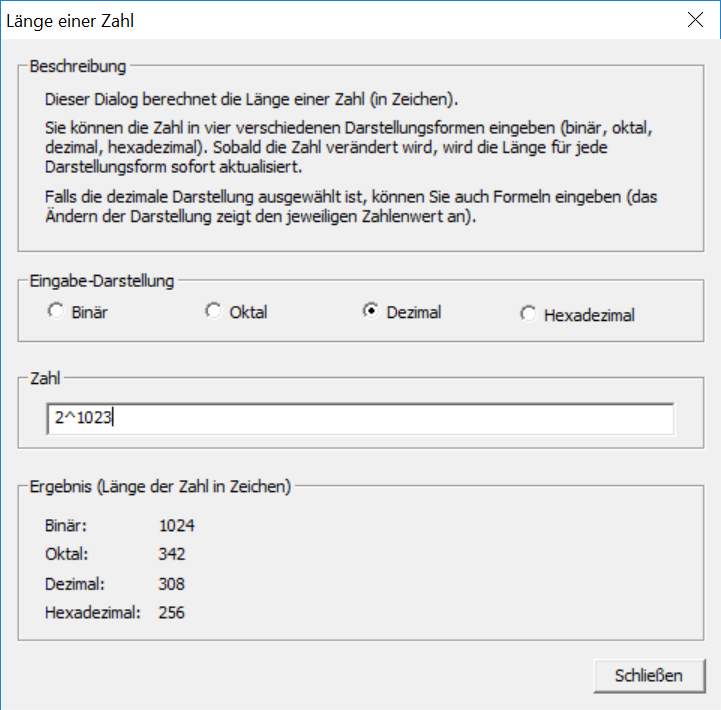

Sie erreichen diesen Dialog über den Menüeintrag Einzelverfahren \ Tools \ Länge einer Zahl.
Mit diesem Dialog können Sie die Länge von Zahlen (in Zeichen) in verschiedenen Darstellungsformen berechnen.

Sobald Sie eine Zahl eingeben oder ändern, wird die Länge der eingegebenen Zahl in den verschiedenen Darstellungsformen automatisch aktualisiert.
Ist die dezimale Darstellung ausgewählt, können Sie auch Formeln eingeben. Beispiele für gültige Formeln sind:
Bemerkung: CrypTool kann Zahlen bis zu einer Bitlänge von 8192 verarbeiten (2467 Dezimalstellen). Daher sind Formeln wie 8^9000 oder 10^2500 ungültig.